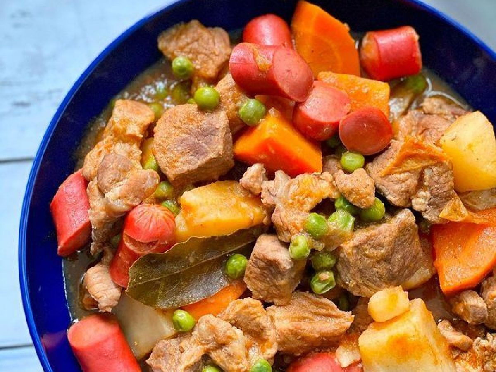

Back
Pork Afritada

Ingredients
Instructions
Nutrition Information Calories: 364kcal (18%)
Carbohydrates: 13g (4%) Protein: 30g (60%) Fat: 21g (32%)
Saturated Fat: 4g (20%) Cholesterol: 93mg (31%)
Sodium: 660mg (28%) Potassium: 856mg (24%) Fiber: 3g (12%)
Sugar: 6g (7%) Vitamin A: 855IU (17%) Vitamin C: 24.1mg (29%)
Calcium: 65mg (7%) Iron: 3.3mg (18%)